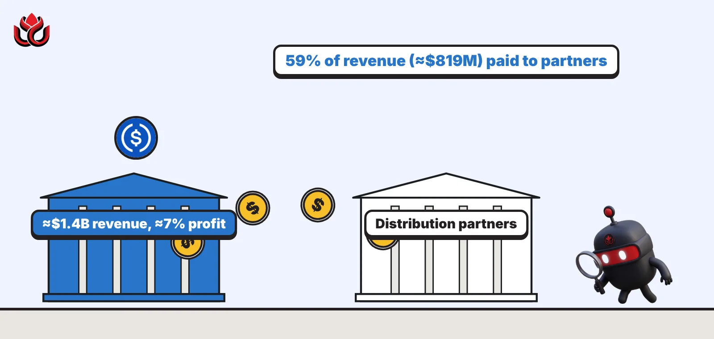

Circle earned $1.4 billion and kept about 7 cents per dollar. Where did the rest go?
Circle says 59% of its first-half 2026 revenue went to the exchanges and apps that distribute USDC. A September filing shows how one of those deals, with Binance, works.

Key points
- Circle made about $1.4 billion in revenue in the first half of 2026 and kept roughly 7 cents of each dollar as profit.
- About 59 cents of each dollar went to distribution partners and transaction costs, and about 34 cents to licenses, banking, compliance and product work.
- Circle pays Binance a monthly fee tied to USDC held through its wallet service, and Binance bought $100 million of Circle shares the same day the deal was signed.
What DeepSea's data shows
One thing a centrally issued stablecoin offers is the ability to freeze it. After the late-October Binance breach, DeepSea reports that issuers froze about 800 million USDC, alongside more than 1.5 billion USDT. In the main receiving wallet, it says, about 1.18 billion USDT and 823 million USDC were frozen within about 40 minutes of the theft. DeepSea's two USDC figures do not quite match, so we use its rounded total.
DeepSea's data also shows how much USDC moves through exchanges. In the week of October 12 to 18, its weekly report counted $8.15 billion of USDC flowing into US and European exchanges and $8.18 billion flowing out, a net outflow of $31.59 million. The largest single exchange transfer that week was a $247.95 million USDC deposit to Coinbase on October 14.
Data: DeepSea (desea.io), checked November 1, 2026, 11:07 p.m. ET.
Circle's own numbers
Circle, the company behind the USDC stablecoin, published a blog post on October 16, 2026, explaining where its money goes. The answer: about $1.4 billion of revenue in the first half of 2026, and only about 7 cents of every revenue dollar left as net profit.
The post was written by chief commercial officer Kash Razzaghi. His argument is that USDC's partners already take the largest share of the economics. "A stablecoin is not a software product," he wrote. His point is that a stablecoin has to fund the licenses, banking, liquidity and compliance that keep it redeemable at one dollar.
A stablecoin is a token designed to hold a steady value, here one US dollar. Circle earns most of its money from the income on the reserve assets that back USDC.
The revenue split
Of the roughly $1.4 billion, Circle says about $819 million, or 59 cents of each revenue dollar, went to distribution and transaction costs. Distribution partners are the exchanges, wallets and apps that get paid for holding and promoting USDC to their users.
A further $473 million, or about 34 cents per dollar, went to what Circle calls reinvestment: licensing, banking, liquidity, compliance, product work and blockchain integrations. What was left, about 7 cents, was net profit.
The more USDC partners hold for their users, the more Circle pays them. Good for USDC's reach, hard on Circle's margin.
Circle's first-half 2026 revenue split
US$ million
Source: Circle, October 16, 2026; net profit amount calculated by LC Insight from Circle's 7% figure

How a partner deal works
One example of those partner payments is public. In a Form 8-K filed with the SEC on September 22, Circle said that on September 17 it signed new arrangements with Binance to promote USDC held through Circle's Modular Smart Contract Wallet service. The deal replaces earlier agreements from November 2024 and August 2025.
Under the new terms, Circle pays Binance a monthly incentive fee equal to a percentage of the USDC held through that wallet service. Binance agreed to carry out other activities to promote USDC on its platform. The deal runs for five years, though either side can end it early if certain events occur. The filing does not disclose the percentage.
On the same day, Binance bought 1,237,011 newly issued Circle shares at $80.84 each, for $100 million in total. Circle said the price was a discount to the market price before closing. Binance agreed not to sell or hedge the shares for two years, unless the commercial deal ends early in certain cases.
The structure links the two sides. Binance is paid to grow USDC on its platform and also owns a stake in the company paying it.
USDC usage is still growing
The same Circle post gave activity figures. USDC settled more than $36 trillion in on-chain volume in the first half of 2026. Minting and redemptions, when users turn dollars into USDC or back again, totaled more than $315 billion, about $1.7 billion a day. The second quarter alone saw $170 billion of minting and redemptions, up 105% from a year earlier.
Circle also pointed to stress handling. In the first quarter, holders redeemed $71.8 billion, which Circle says was about 90% of circulating supply at the time. By June, it says, USDC accounted for about 77% of global stablecoin transaction volume, up from 60% a year before.
USDC had about $71.4 billion in circulation on November 2, 2026, according to CoinGecko.

Why Circle is showing its margins
Most of Circle's revenue depends on two things it does not fully control: interest rates and the deals it strikes with distributors. Higher rates raise the income on reserves. More USDC held through partners raises the payments Circle owes them.
By publishing the split, Circle is making a public case that its margin is already thin. That matters as stablecoin issuers compete to offer partners a bigger share of reserve income.
The activity numbers also show how quickly money moves through USDC. Mints and redemptions averaged about $1.7 billion a day in the first half. Set against the roughly $71.4 billion in circulation in early November, that daily flow equals about 2.4% of supply, by our calculation. Each of those flows has to be settled in real dollars through banking partners, which is part of the cost Circle says sits behind the 34 cents it reinvests.
Timeline
Circle and Binance sign a five-year USDC deal; Binance buys $100 million of Circle stock
Circle files the Form 8-K describing the deal
Circle publishes its USDC economics post
USDC circulation near $71.4 billion, per CoinGecko
LC Insight analysis
This section is our reading of the facts above, not a statement of fact.
- We read Circle's post as a negotiating document as much as a disclosure. By showing how little profit is left, it tells partners there is not much more to give.
- Usage and profit tell different stories. USDC is used more than ever, but most of the value flows to distributors, and falling rates would squeeze what is left.
- The Binance deal shows who holds the power. A big platform can get both a fee on balances and an equity stake, and we expect the largest distributors to take a growing share of stablecoin money.
What's next
- Circle's next earnings report and the share paid to distribution partners
- USDC circulation on CoinGecko
- New or revised partner agreements disclosed in Circle's SEC filings
Disclaimer. This article is based on public information and the sources listed below as of the update time shown. It is for information only and is not investment, legal or tax advice. Figures may change as companies and authorities publish new data.